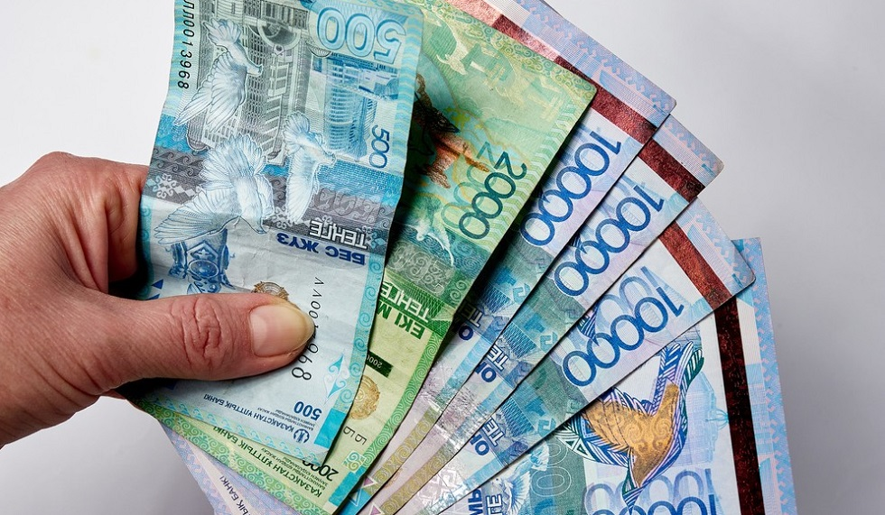

Welcome to
Выплаты населению в период эпидемии коронавируса
2020.11.24 14:01Профи Коммент Работа Фриланс Идеи Деньги Mobile Технологии Интернет Главная » Льготы »
Льготы и выплаты в период эпидемии коронавируса
25 сентября 2020 ВК OK Fb Pi TwКак известно, 11 мая 2020 года Президент РФ обратился к гражданам страны в связи со сложной сан-эпид обстановкой и введением дополнительных мер поддержки населения.
В связи с этим многие люди интересуются, какая поддержка населения в период карантина положена прямо сейчас и на что рассчитывать тем, кто потерял работу или лишился дохода.
Содержание статьи:
1. Поддержка населения в период эпидемии коронавируса 2. Отпуск с сохранением зарплаты 3. Разовые выплаты пенсионерам и ветеранам 4. Выплаты семьям с детьми 5. Повышение пособия безработным 6. Увеличение больничных 7. Льготы по ЖКХ 8. Каникулы по кредитам и ипотекеПоддержка населения в период эпидемии коронавируса
Основные меры поддержки граждан были озвучены В.В.Путиным еще на первом его Обращении к гражданам России от 25 марта 2020 года. Дополнительные виды соцпомощи глава государства дополнил в выступлении 11 мая 2020 года. Именно из этих выступлений можно взять основные виды помощи, на которые всем нам можно надеяться сегодня.
Хотя сразу следует оговориться, что карантин официально в стране не объявлен, однако в некоторых регионах он уже начал действовать. В разных регионах введены режимы самоизоляции.
Например, с 31 марта в Краснодарском крае официально объявлен карантин и меры по нераспространению заболевания такие:
полный запрет на передвижение по городу можно выходить только в магазин или аптеку транзитный транспорт не имеет права въезда в населенные пункты гражданам, нарушающим режим, будут выписаны штрафы.В некоторых местах движение ещё не закрыто, но с высокой степенью вероятности будет ограничено в скором времени. Под закрытие попали многие предприятия и организации и в такое время как нельзя кстати людям оказалась поддержка от государства. Что известно на сегодня о размерах помощи властей простым людям – давайте разбираться.
Какие льготы есть в период карантина в России:
Отпуск с сохранением заработной платы (тем, кто в отпуске) Единоразовые выплаты пенсионерам и ветеранам Дополнительные деньги семьям с детьми Повышение пособия безработным Повышение суммы больничных Субсидии на оплату коммуналки Каникулы по всем кредитам и ипотеке Облегчение процедуры банкротства физлиц Меры поддержки предпринимателей и организаций (подробнее в статье льготы малому бизнесу )Теперь по каждому пункту пройдёмся подробнее, чтобы понять, что конкретно и кому полагается.
Отпуск с сохранением зарплаты
На период ограничительных мер, связанных с борьбой против коронавирусной инфекции государство приняло решение объявить нерабочими днями период до 30 апреля 2020 года, а затем продлило этот срок до 11 мая.
В это время большая часть населения будет оставаться в отпуске и здесь важным является то, что работодатель обязан:
отправить работника в отпуск с полным сохранением за ним всей заработной платыВ том случае, если вас заставляют написать заявление на отпуск без сохранения зарплаты – вы имеете полное право не подписывать такой документ.
Читайте также: как получить деньги, если работал неофициально
Однако могут быть и такие ситуации, при которых ваша компания просто обанкротится в период кризиса и тогда лучшим советом будет сразу обратиться на службу занятости – тем более, что в некоторых регионах, например, в Москве, работникам, которые потеряют работу из-за пандемии коронавируса, обещают выплачивать дополнительные суммы денег. Путин объявил, что пособие по безработице с апреля будет поднято до уровня МРОТ – читайте об этом ниже.
Разовые выплаты пенсионерам и ветеранам
Еще одна важная категория помощи населению, оказавшемуся в самой сложной ситуации – это дополнительные денежные пособия пенсионерам и ветеранам. Президент сообщил, что все положенные выплаты с 75-летию Великой Победы должны быть перечислены без задержек:
Ветеранам по 75000 рублей Труженикам тыла по 50000 рублейСтоит отметить, что самыми первыми под режим самоизоляции попали пожилые граждане, в первую очередь те, кому старше 65 лет. Им порекомендовали вообще не покидать жилища, а для покупки еды и лекарств пользоваться услугами онлайн-доставки или обращаться к родственникам или знакомым. Либо, в крайнем случае, если в городе не налажена дистанционная доставка товаров – обращаться в органы социальной защиты с просьбой оказать помощь в этом вопросе.
В некоторых регионах, например, в Москве в марте-апреле 2020 года пенсионерам из бюджета города выплатили 4 тысячи рублей, в Подмосковье – по 3 тысячи. И это не единичные случаи – к столице постепенно присоединяются и другие области.
Выплаты семьям с детьми
В особую льготную категорию попали и семьи с детьми – для них на период карантина предусмотрены различные меры социальной и прежде всего денежной поддержки:
Дополнительные выплаты по 5000 рублей семьям с детьми в возрасте до 3 лет, в которых у родителей есть право на маткапитал (пока планируется, что срок выплат составит 3 месяца с апреля по июнь, в дальнейшем возможна пролонгация) с 1 июня будет перечислена разовая выплата в 10 000 руб. за каждого ребенка с 3 до 15 лет включительно. По 3000 рублей положено семьям в случае потери родителями работы в период нерабочих дней Обещанные выплаты на детей от 3 до 7 лет также начнут выдавать уже в июне. Детское питание могут выдать готовыми наборами (так делают в Москве – там школы закрылись на карантин и для многодетных семей, чьи дети пользовались льготами на питание, предложили подъехать в школу и забрать сухой паёк, где есть всё необходимое) Для продления прав на путинское детское пособие или иные льготы и выплаты не нужно будет собирать справки, и идти по инстанциям – на период режима борьбы с пандемией льготники не обязаны предоставлять никакие справки – пособия и выплаты будут автоматически продлеватьсяКстати, если вы не знаете, на данный момент у родителей есть целый ряд денежных пособий и льгот:
выплаты с материнского капитала в 2020 году пособие, если ребенок не ходит в детский сад льготы для матерей одиночек в 2020 году детские пособия до 3 лет в 2020 году доплаты малоимущим семьям в 2020 году
Повышение пособия безработным
Этот вид поддержки официально озвучен Президентом и доведён до всех Центров занятости населения страны. Все, кто будет уволен или потеряет работу иным способом из-за пандемии – могут рассчитывать на увеличенные выплаты со Службы занятости:
Президент Путин заявил о повышении максимального размера пособия по безработице с 8500 рублей до уровня МРОТ (12130 рублей) в месяц
Если вы потеряли работу, обязательно прочитайте эту статью:
Лучшие профессии в эпидемию коронавирусаКроме того уволенные граждане имеют целый перечень льгот, которыми они могут воспользоваться в любое время:
Как найти работу, если уволили по статье и никуда не берут Как получить деньги, если работал без оформления трудового договора
Увеличение больничных
Всем, кто оказался в сложной ситуации из-за пандемии коронавирусной инфекции, например, попал на больничный, предусмотрены новые условия господдержки (цитата В.В.Путина):
Сейчас больничный рассчитывается исходя из стажа работника и его зарплаты. В результате сотрудники, прежде всего молодые люди, могут получать крайне низкие выплаты по больничному листу. Это, конечно, несправедливо. Предлагаю установить норму: выплаты по больничному должны рассчитываться исходя из суммы не менее 1 МРОТ в месяц.
Как уточнил Владимир Путин, такая норма будет действовать до конца 2020 года.
Льготы по ЖКХ
Президентом уже были объявлены меры поддержки населения в сфере оплаты коммуналки:
Субсидии на оплату ЖКХ (ими могут воспользоваться все, кто подпадает под категории, подробнее читайте здесь ) Отмена штрафов и пеней за задержку по оплате квитанций Отсрочка оплаты капремонта для льготных категорий граждан Автоматическое продление действия справок на льготы по ЖКХ до конца 2020 годаКаникулы по кредитам и ипотеке
Многие люди столкнулись с потерей работы и как следствие, с трудностями при необходимости платить кредиты. Никто не знает, как платить ипотеку в таких условиях, и потому власти приняли решение дать таким гражданам:
Отсрочку по ипотеке Каникулы по всем потреб.кредитамКак заявил Президент России, если человек попал в сложную жизненную ситуацию:
его месячный доход резко сократился, более чем на 30%, он имеет право временно приостановить обслуживание своего долга и пролонгировать его, гражданин полностью освобождается от всяких штрафных санкций.Если ваша зарплата упала на 30% и больше (по сравнению с прошлым годом), вы можете потребовать отсрочки по любому кредиту, который у вас имеется и не обязаны выплачивать штрафы и пеню, но для этого нужно заранее предупредить ваш банк.
Во время кредитных каникул банкам запрещено:
начислять неустойку, требовать досрочного исполнения обязательств, направлять взыскания на предмет залога или предмет ипотеки, обращаться с требованием к поручителю.Отсрочить платежи можно на период до шести месяцев.
Условия кредитных каникул Сбербанка
Кредитные каникулы в связи с ситуацией из-за распространения коронавируса предоставляются:
только по кредитам, полученным до 3 апреля 2020 г. по ипотеке с максимальной суммой кредита 1,5 млн руб. потребкредитам до 250 тыс. руб. По автокредитам до 600 тыс. руб., по потребительским кредитам для индивидуальных предпринимателей до 300 тыс. руб., по кредитным картам для физических лиц до 100 тыс. руб.Сейчас читают
Куда пойти работать, чтобы получить квартиру от государства бесплатно
Льготная выслуга ФСКН при переводе в МВД
Как гражданке Украины родить в России и получить пособие на ребёнка
Кому не повысят пенсионный возраст в 2021 году: список
Льготы ветеранам труда в 2021 году: изменения и новости
Льготы одиноким матерям в 2021 году
Повышение ЕДВ в 2021 году: индексация ежемесячной денежной выплаты
Льготы предпенсионерам
Социальная карта москвича
Темы: выплаты деньги карантин коронавирус Льготы пандемияДобавить комментарий Отменить ответ
Финансовые технологии (FinTech):
Электронные кошельки • Денежные переводы • Выбираем банк • Сравниваем е-кошельки • Карта МИР • Про ипотеку • Налоги • Деньги • Банки •Интернет-технологии (IT):
Кто заходил ко мне в ВК • Ютуб-лайфхаки • Фишки Авито • Секреты ВК • 10 бирж фрилансера • Заработать на дому • Технологии • Инет •Социальные вопросы:
Статусы для сайта знакомств • Льготы ИП 2020 • Пенсии • Пособия • Маткапитал в 2020 году • Авто • Льготы • Пенсия в 2020 году • Работа • Куда переехать • Недвига • 2020 год • Знакомства •Мобильные технологии:
Мобильные • Кто следит за твоим смартфоном • Местоположение человека по телефону • ТОП бесплатных приложений • Экономим батарею Андроида • NFC • QR-код • e-SIM •Журнал ПрофиКоммент © 2015-2020 Все права защищены
О проекте Контакты (по рекламе на сайте) Журнал Profiсomment.ru Политика конфиденциальности Пользовательское соглашение Журнал ПрофиКоммент - это авторский блог о современных технологиях